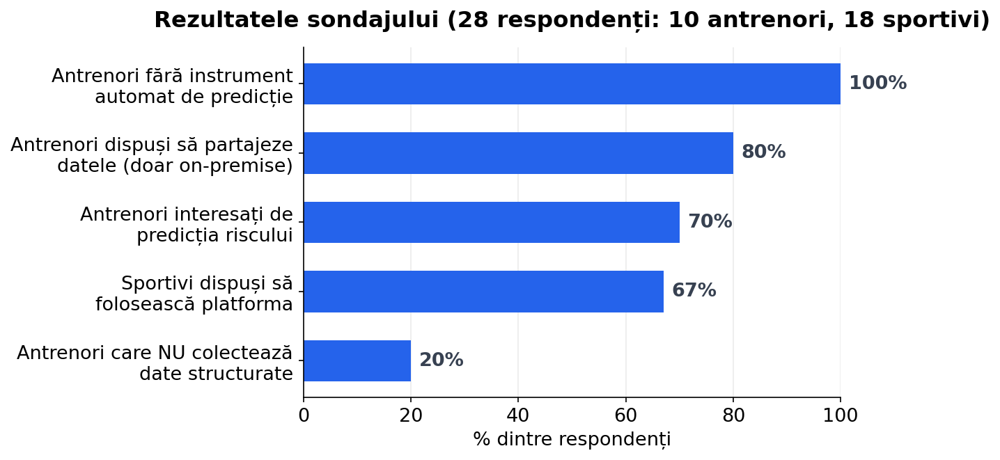

Platformă de analiză pentru monitorizarea sportivilor — predicția riscului de accidentare prin
Federated Learning, fără centralizarea datelor.
Universitatea Națională de Știință și Tehnologie POLITEHNICA București · Facultatea de Automatică și Calculatoare
Autor: Andrei-Laurențiu Radu
Coordonatori: Prof. Dr. Ing. Radu Ioan Ciobanu · Ș.l. Dr. Ing. Radu Corneliu Marin
01 — Problema
Cluburile mici sunt lăsate pe dinafară
🏆 Elită
Analiști, fizioterapeuți, nutriționiști dedicați — dar cu costuri uriașe.
📋 Cluburi mici
Monitorizare pe hârtie/Excel, fără predicție și fără protecția datelor.
⚠️ 3 bariere
Lipsă de instrumente accesibile · lipsă de expertiză · constrângeri GDPR.
02 — Obiective
Cinci obiective, o singură platformă
Structurarea datelor
Predicția riscului
Recomandări AI
Confidențialitate (FL)
Acces pe roluri
Admin · Antrenor · Jucător — fiecare cu permisiunile lui.
03 — Validarea nevoii
Sondaj: 28 respondenți, 9 sporturi

100%
antrenori fără instrument automat
7/10
interesați de predicția riscului
8/10
acceptă partajarea doar dacă datele rămân la club
10 antrenori · 18 sportivi — nevoia de confidențialitate este explicită.
04 — Soluții existente
Niciuna nu le combină pe toate
Criteriu
Catapult
STATSports
Kitman Labs
Hudl
LawrAnalyzer
Predicție AI a riscului
~
~
✓
✕
✓
Învățare între cluburi (federată)
✕
✕
✕
✕
✓
Datele rămân la club
✕
✕
✕
✕
✓
Fără hardware dedicat
✕
✕
✓
✓
✓
Preț accesibil / open-source
✕
✕
✕
✕
✓
Soluțiile actuale: scumpe, bazate pe hardware, SaaS centralizat.